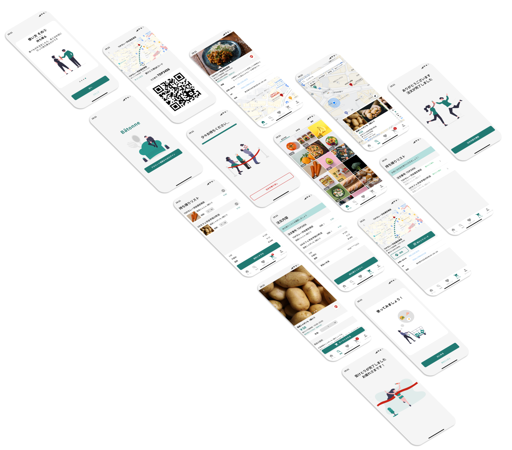

プロジェクトの前提
このプロジェクトは、学校のグループ課題の一環で、モバイルアプリのプロトタイプを作成するというもので、テーマを自由に決めることができました。
プロジェクトは3人体制で、私はグループの議論のファシリテーション、ワイヤーフレームの作成、いくつかの機能のプロトタイプの作成、そしてユーザビリティテストを担当しました。
UI/UXデザイン
このプロジェクトは、学校のグループ課題の一環で、モバイルアプリのプロトタイプを作成するというもので、テーマを自由に決めることができました。
プロジェクトは3人体制で、私はグループの議論のファシリテーション、ワイヤーフレームの作成、いくつかの機能のプロトタイプの作成、そしてユーザビリティテストを担当しました。
食品ロスは経済的損失をもたらすだけでなく、環境に対して悪影響を及ぼす重要な社会課題です。日本では、出荷された食品のうち、約8%が食べられるにも関わらず、捨てられています。(農林水産省, 2016 ).
東京都内、都心部在住
都心部はスーパーが少なく、自炊がしたくてもしづらい。また生活費が高く、食費を抑えたい。
レストランやスーパーで余った食材・料理を安く買って持ち帰ることができるフードシェアアプリを設計しました。
グループワークを始めてすぐに、私たちのチームはアイディアの発想に取り掛かりました。解決したい課題を持ち寄って議論した結果、「食品ロス」をテーマにすることを決め、「レストランやスーパーが、まだ食べられるのに捨てられてしまいそうな食品を安くユーザーに売ることができるプラットフォーム」を通して食品ロスを削減できる、という仮説を立てました。
まずは、「食品ロス」の問題への理解を深めるべく、デスクリサーチをしてみました。結果、出荷された食品のうち、33%が廃棄されており、さらにそのうちの23%はまだ食べられる「食品ロス」である（つまり、出荷された食品の約8%が食べられるのに捨てられている）と分かり、やはり食品ロスは大きな問題だと再確認しました。
そこからは、人間中心設計のアプローチを取りました。まず、ユーザーへのインタビューを通して「食」に関するニーズを理解し、ユーザーの要求をアプリの要件に落とし込み、解決策の設計と評価を繰り返して最終的なプロトタイプまで煮詰めました。
ユーザーの抱えている顕在的・潜在的な課題を特定するために、まずは「食」についての現状でのユーザーの経験を理解することから始めました。ユーザーインタビューを2件実施し、それをベースにユーザーペルソナとユーザージャーニーを作成しました。（振り返ると、既にあったコンセプト案をより直接的にテストする方が良かったかもしれないと反省...）
ユーザーモデリングを通してユーザーの現状を明確にした結果、主に3つのことが分かりました：
これらのインサイトをもとに、以下のように機能要件をまとめました：
機能要件をもとに、今度はオブジェクト指向で情報設計を行いました。まずオブジェクトを作成し、そのプロパティや取れるアクションを定義し、オブジェクト間の関係性、およびビュー（一覧 vs 詳細画面）を整理しました。
情報設計をベースにして、次にワイヤーフレームを作成しました。そのワイヤーフレームを使って3件のユーザビリティテストを実施し、ユーザーフローに大きな問題がないことを確認しました。また、ワイヤーフレームの作成と同時並行でビジュアルシステムやコンポーネントの設計を進めました。そして、ワイヤーフレームとビジュアルシステムを掛け合わせて、ハイファイのプロトタイプを作成しました。
プロトタイプを使ってユーザビリティテストを3ラウンドを実施し、ユーザビリティ上の問題をその度に潰していきました。UI設計においては、エッジケース（複数の店舗から食材を購入する）における会計〜店舗へのナビゲーション〜受け渡しのUIに最も苦労しました。
最初は、店舗ごとに別々に決済・ナビゲーション・受け取りをするようにUIを設計していました。しかし、それだと複数の店舗から食品を購入する場合に会計の操作を複数回行わなければならず、非常に手間がかかることが分かりました。
そこで、カートに入れた食品を一度にまとめて決済できるように決済フローを改善しました。ナビゲーション〜受け取りに関しては、受け取る必要のある食品をリストでまとめて表示し、また複数店舗へのルートを一本道で表示させました。しかし、それだと情報過多気味になってしまい、ユーザーを混乱させてしまいました。
これを受けて、「受け取りに行く店舗のリスト（とそこで受け取る食品）」と「それぞれの店舗へのルート」を別の画面に分けて情報を分散させました。また、表示する店舗を現在地からの距離ベースで近い順に並び替えることで、どの店舗に最初に行くべきかを明確にしました。（振り返ると、to-beのユーザージャーニーをしっかりと描いて決済〜ナビゲーション〜受け取りのユーザーフローをより明確にしておくことで、デザインの修正工程を減らすことができたかもしれないと反省...）
今回は、食品を買うユーザーに焦点を当ててプロジェクトに取り組みましたが、このようなプラットフォームを実際に実現するには、プラットフォームに賛同・参加してくれる店舗の数がKSF（重要成功要因）だと考えられるため、店舗側としっかり連携し、店舗にとって「良い経験」をデザインすることが大事だと言えそうです。
このプロジェクトからは、ユーザーにデザインを持っていき、評価してもらうのを繰り返すことの重要性を学びました。実際、プロジェクトの様々なタイミング（インタビュー、ワイヤーフレーム、プロトタイプ）でユーザーをしっかり巻き込んだことで、プロジェクト終盤でのデザイン修正を最小に抑えることができたと考えています。
また、誰も疎外せずにユーザーに社会貢献意識を持ってもらうことの難しさを実感しました。このアプリを通して、「環境にとって良い影響を与えている実感」を醸成したいと考えていましたが、「環境保護」を前面に押し出しすぎて鬱陶しがられるのも避けたいと考え、最終的には「食品ロス削減」という社会的意義についてのメッセージは最小限に抑えました。今後、そのさじ加減を探求して、最適なバランスを見つけていきたいです。